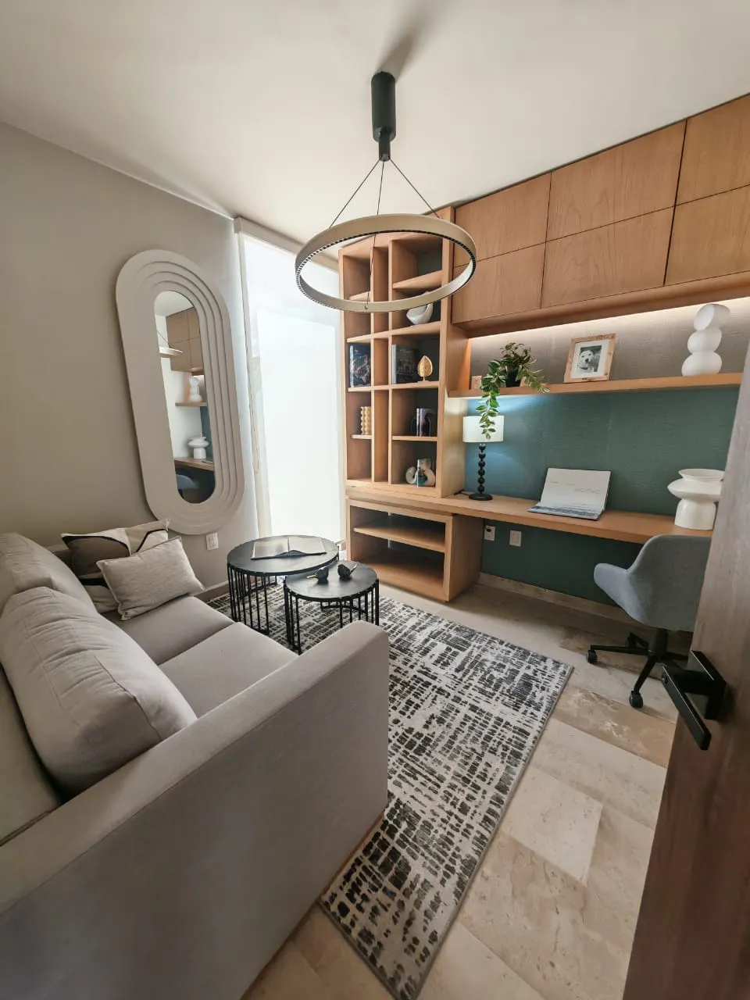
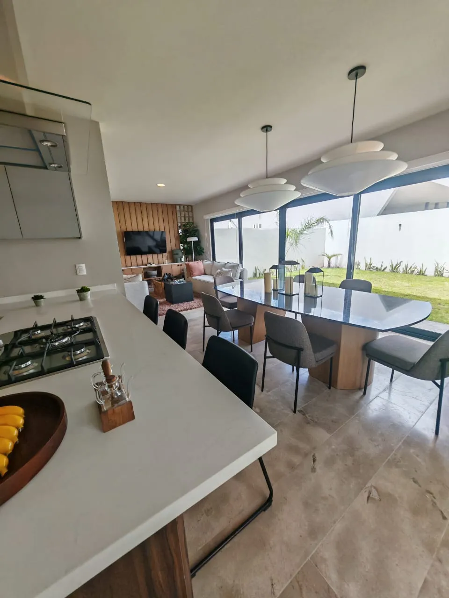
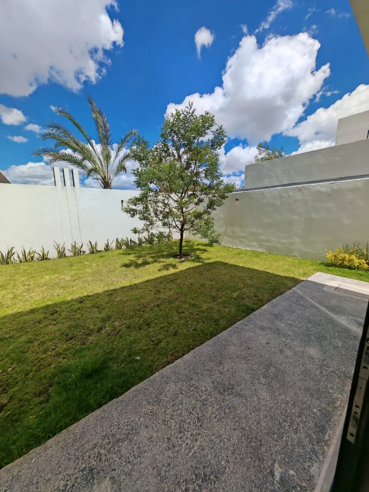
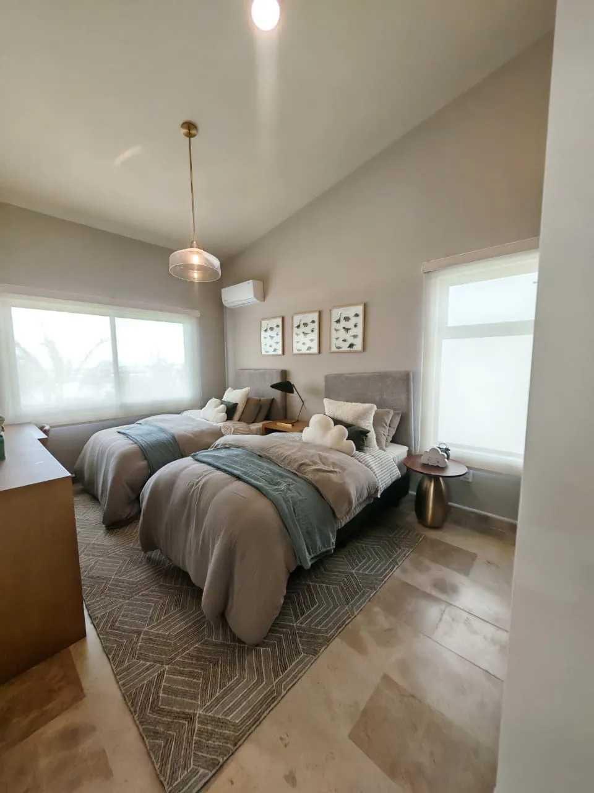
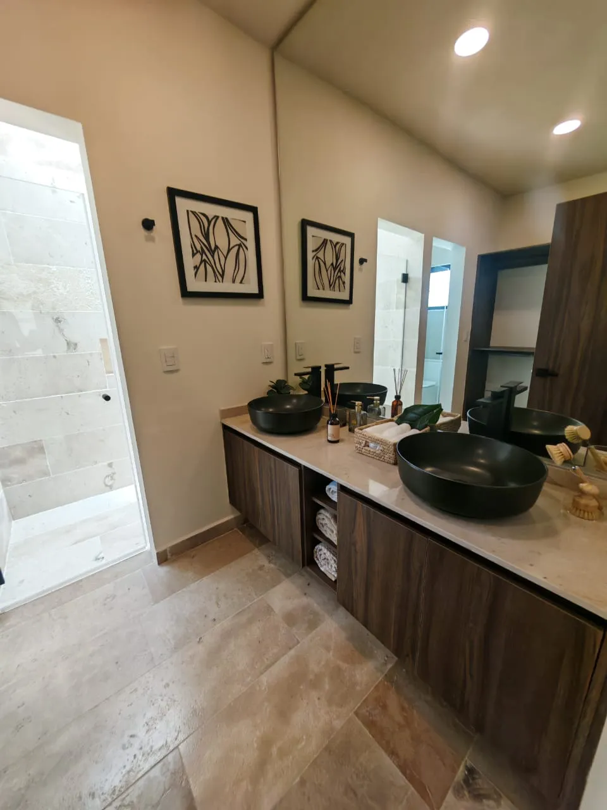

Trabajo sin invadir el descanso
El estudio en planta baja permite reservar un espacio para concentrarte y conservar las tres recámaras para otros usos.
Casa · Vela Sur
Desde $5,950,000 MXN
Referencia de ficha. Confirma el precio vigente.





Desliza para explorar las imágenes →
MÁS ALLÁ DE LOS METROS CUADRADOS
Puede encajar contigo si… Quieres tres recámaras, jardín y un lugar para trabajar en casa con una distribución más contenida.
El estudio en planta baja permite reservar un espacio para concentrarte y conservar las tres recámaras para otros usos.
La cocina integrada y el jardín pueden favorecer una rutina en la que preparar alimentos y convivir sucedan cerca. La visita permite comprobar esa relación entre espacios.
Sus 190 m² construidos y el precio desde publicado permiten compararla con Magnolia dentro del mismo residencial. La elección depende de cuánto espacio necesitas utilizar cada día.
Confirma a qué unidad corresponde el precio desde, qué acabados incluye y si las dimensiones del estudio funcionan para tu actividad.
UBICACIÓN Y ENTORNO
Búsqueda por nombre del desarrollo; confirma el acceso conmigo antes de tu visita.
Cocina integrada, jardín y estudio en planta baja. Una distribución para combinar vida diaria y trabajo en casa.